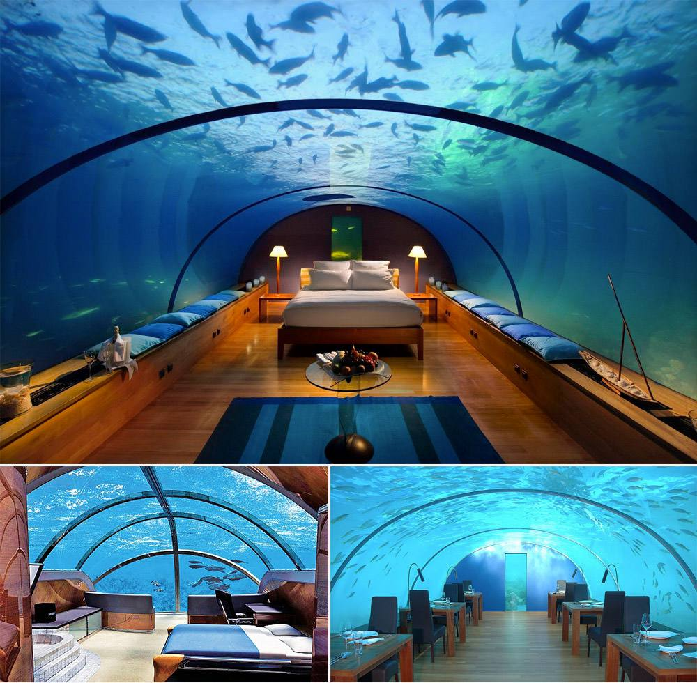
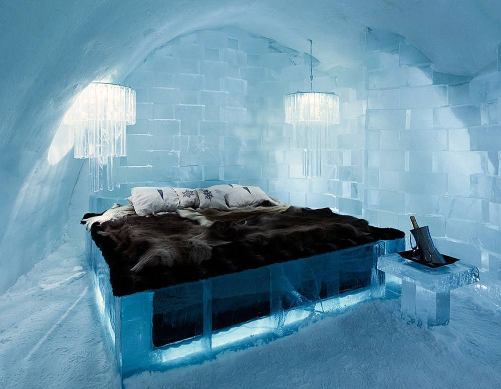
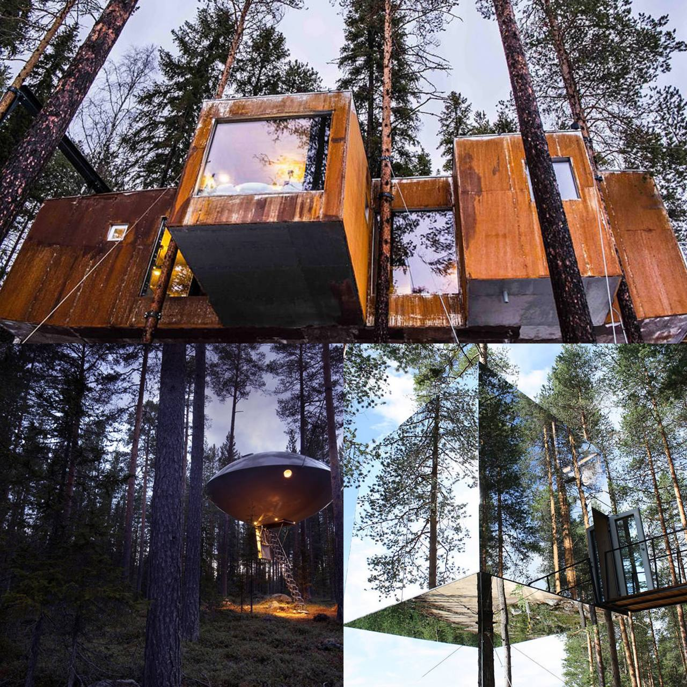

Відкрийте для себе унікальні місця, де розкіш зустрічається з комфортом, а кожен момент стає незабутнім. У нашому гіді ви знайдете найвідоміші готелі світу, які вражають своєю архітектурою, обслуговуванням та атмосферою.
Чи знали ви, що:
Приготуйтеся до незабутніх подорожей та вражень, адже кожен з цих готелів — це не просто місце для ночівлі, а справжня оаза комфорту та стилю.

Розкішні готелі переосмислюють комфорт і елегантність, гарантуючи, що кожна мить вашого перебування буде нічим іншим, як надзвичайним. Кожен з них пропонує:
| Poseidon Undersea Resort, Фіджі | Льодяний готель The Ice Hotel, Швеція | Готель з будинками на деревах, Боден, Швеція |
|---|---|---|
|  |  |  |
| Сайт Poseidon Undersea Resort | Сайт The Ice Hotel | Сайт TreeHotel |
| Піти глибоко під воду пропонує підводний готель-мрія на острові Посейдон. Готель побудований на базі підводної станції, яка тепер не використовується за призначенням. Готель знаходиться на глибині 12 метрів, номери мають форму герметичних капсул, зроблених з прозорого скла, капсули сполучені між собою герметичним коридором. Завдяки цьому відкривається просто приголомшливий огляд глибин, створюється відчуття, ніби ви оселилися у своєму власному океанаріумі, або ж живете на іншій планеті. | Зимова казка оживає для гостей цього готелю, який розташований за дві сотні кілометрів на північ від Полярного кола. Все тут зроблено зі снігу і льоду і буквально дихає взимку. Не лише стіни, але і самі ліжка — крижані, покриті оленячими шкурами. Крижані східці, крижаний бар, скульптури з льоду у формі птахів і тварин — від цього буквально захоплює дух. Правда, зважаться на таку ночівлю найсміливіші — при будь-якій температурі зовні в номерах середня температура – 7°C. | Любителям паранормальних явищ в шведському готелі TreeHotel створили спеціальний номер, який носить назву “НЛО”, що повністю відповідає його зовнішньому вигляду. Це залізна конструкція у формі літаючої тарілки, яка ніби зависла між деревами. Потрапити всередину можна за допомогою спеціальних сходів. Особливо видовищно цей номер виглядає в темний час доби, коли включається спеціальне підсвічування. Окрім цього, в готелі є багато інших не менш цікавих кімнат, які уразять найдосвідченішу уяву. |